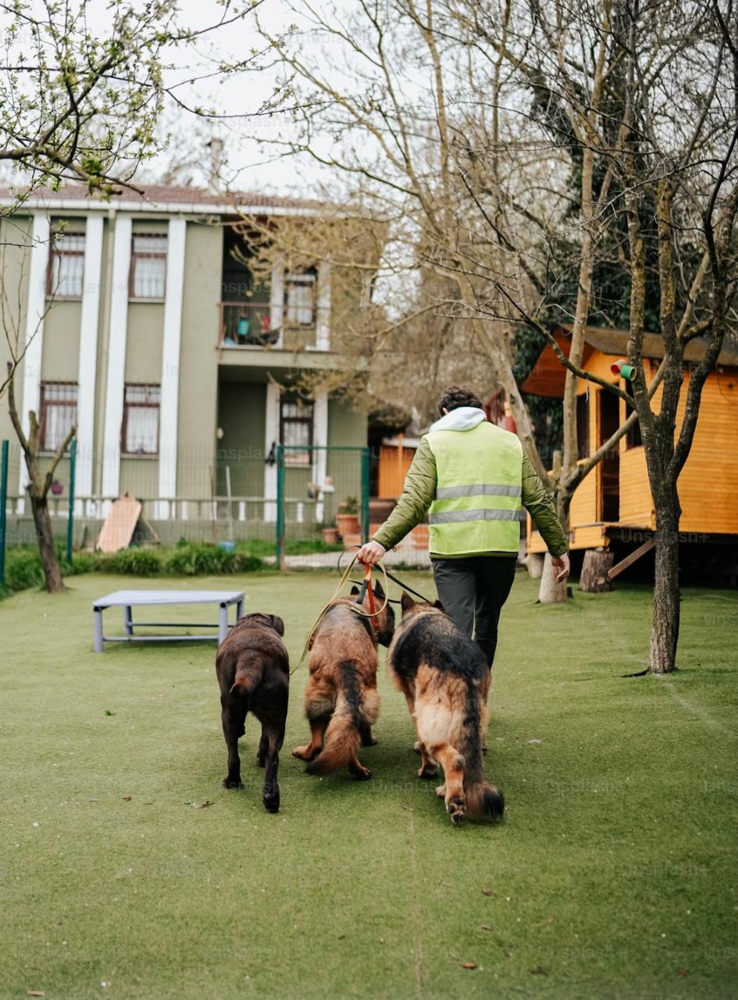

Volunteer & Sponsorship Enquiry
There are many ways to support Paws & Whiskers Animal Rescue. You can volunteer your time, help with community activities, or become a sponsor to support the care of rescued animals.
Complete the form below and a member of our team will review your enquiry and contact you with more information.
Volunteer With Us

Volunteers play an important role in supporting our rescue activities and helping animals in need.
Volunteer opportunities may include:
- Assisting with animal care.
- Helping at fundraising events.
- Supporting community outreach programmes.
- Assisting with adoption events.
- Helping with administrative activities.
- Supporting animal awareness campaigns.
Become a Sponsor
Sponsors help us provide rescued animals with food, shelter, veterinary care, and other essential resources.
Businesses and individuals interested in supporting our organisation can submit a sponsorship enquiry using the form below.
Enquiry Form
Other Ways to Support Us
If you would like to support Paws & Whiskers financially, visit our Donation & Support page.
Support Our Rescue